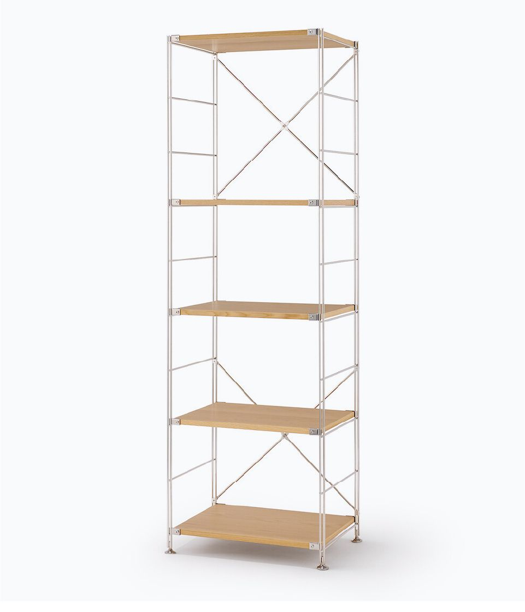
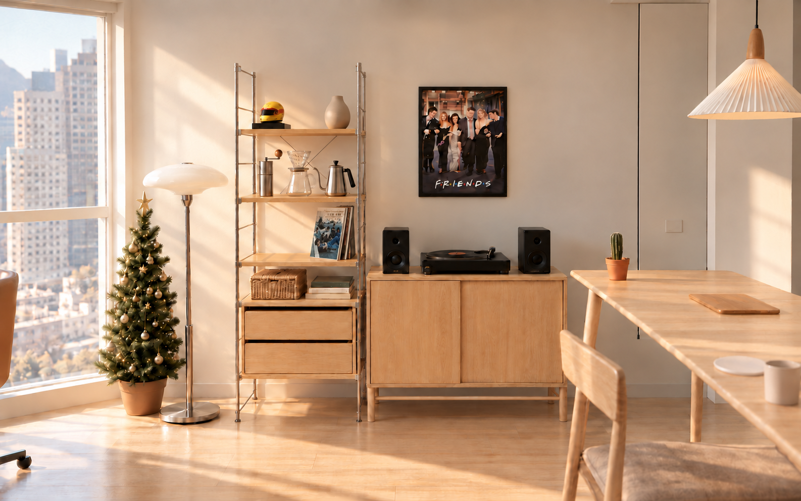
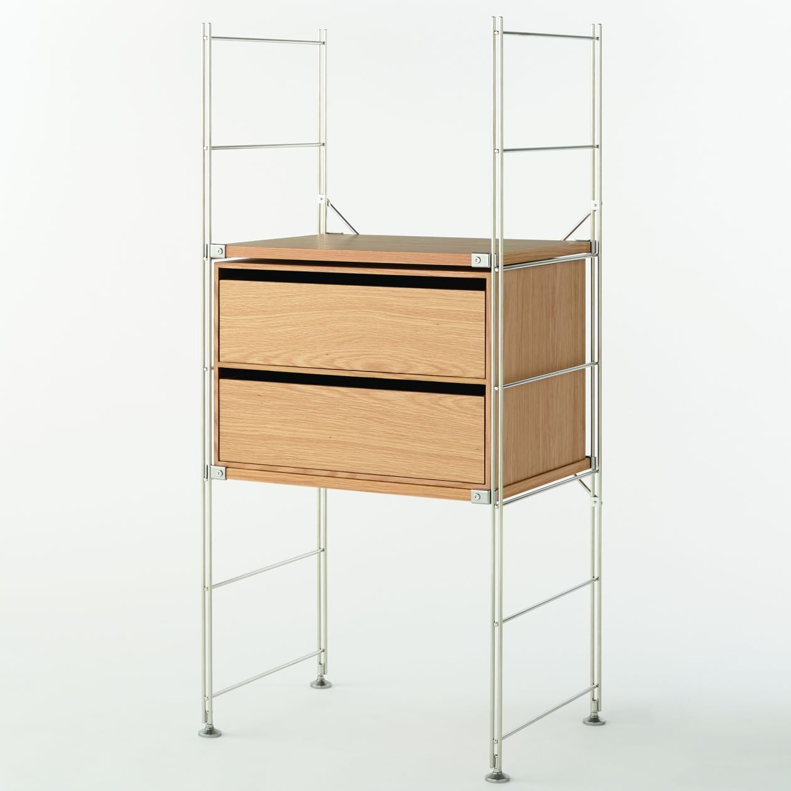

왼쪽 · 무인양품 SUS 기본 L
선택 옵션: 떡갈나무 / 기본 L (58cm) 427
폭58 × 깊이41 × 높이175.5cm
MDF+떡갈나무 베니어 · 선반5장 · 스테인리스 프레임
379,000원
기본배송50,000원. 사진은 판매자의 기본 조립 모습이며, E안은 같은5장의 높이를 조정한 계획입니다.
실제 제품 보기 ↗왼쪽은 무인양품 SUS 떡갈나무 기본 L, 오른쪽은 아레초 오크 수납장과 검정 오디오. 2단 와이드 서랍은 바닥에서 반 칸 정도인 약25.5cm를 띄워 놓았어요. 최상단 판은155cm로 낮춰 보유 헬멧과 작은 샌드색 도자기 오브제1개를 올렸어요.118cm 칸에는 핸드드립 도구,81cm 칸에는 LP판 약4장만 수납하고 프렌즈 액자는 복도 원위치에 두었어요. 실제 드립은 식탁에서 해요. 커피 도구와 도자기 오브제의 제품·가격은 아직 정하지 않았습니다.



선택 옵션: 떡갈나무 / 기본 L (58cm) 427
폭58 × 깊이41 × 높이175.5cm
MDF+떡갈나무 베니어 · 선반5장 · 스테인리스 프레임
기본배송50,000원. 사진은 판매자의 기본 조립 모습이며, E안은 같은5장의 높이를 조정한 계획입니다.
실제 제품 보기 ↗
폭93 × 깊이40 × 높이75cm
슬라이딩 문2개 · 낮은 다리형 수납장
기본배송 무료. LP판 내부 수납 유효 높이·하중은 미확인입니다.
실제 제품 보기 ↗
떡갈나무 · 폭52 × 깊이37 × 높이34.5cm
받침 선반 위에 놓는 케이스 · 58cm SUS와 조합
사진 속 금속 선반은 별도입니다. E안은 사진보다 낮춰 케이스 밑면 약25.5cm·윗면60cm로 놓았어요. 가격은 품절 상품의 표시가를 준비금으로 반영했으며 재입고 후 확인이 필요합니다.
서랍 제품 보기 ↗상품 가격·옵션 확인일은2026.10.28, 배치 설명 수정일은2026.10.30입니다. 판매가·재고·배송 지역 조건은 주문 시 달라질 수 있어요. 위 사진 속 촬영 소품은 가구에 포함되지 않습니다.
L 선반379,000원 + 서랍81,900원 + 합배송50,000원 =510,900원. 오른쪽 아레초368,000원을 합친 이 코너의 계획비는878,900원입니다.
서랍 품절로 같은 날 합배송은 아직 확정되지 않았습니다. 분리배송이면50,000원이 추가될 수 있어요. 총39개 품목이며 예비비30만원과 큐커 계획비를 포함합니다. 냉장고·매트리스·무선청소기 본체와 미확정 비용은 별도입니다. 핸드드립 도구와 최상단 도자기 오브제는 제품·가격 미정으로 위 총액에 포함하지 않았습니다. 전체 내역 보기 ↗